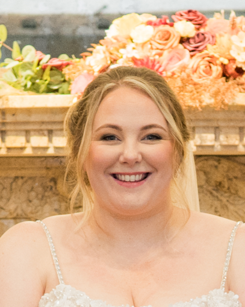
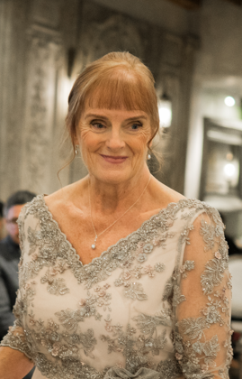

Where art meets celebration.
A mother-and-daughter studio in Suffolk, making the kind of florals you keep on your mantelpiece long after the day is over.

From bride to bench.
LilliBloom began with Esme planning her own wedding — and finding that beautifully made artificial florals could hold a room together as well as anything cut that morning, and stay that way long after.
She and her mum, Lynn, made the arrangements between them. Guests assumed they were fresh. Friends asked if they could borrow them. A second wedding's worth followed, then a third.
The studio works the way it started: small numbers, by hand, by appointment.

Esme
Founder · Lead DesignerEsme is a Head of Art teacher and working artist. Before teaching, she was a set designer at the Royal Opera House, Covent Garden — a discipline that still shows in how she thinks about a wedding: as a room, a palette, a long sightline.
She designed her own wedding florals, and that experience informs every consultation. She knows what's worth fussing over and what isn't.

Lynn
Co-creatorLynn works alongside Esme on every commission. She brings a steady hand, a careful eye, and the kind of patience artificial florals reward — every stem placed, every bind tied properly.
Between them, the studio stays small enough that you'll always know who's making your flowers.
What artificial gives you.
-
Long-lasting beauty.
Arrangements stay exactly as they leave the studio. No wilt, no last-minute swap.
-
Any bloom, any season.
Peonies in November. Cherry blossom in summer. The flower you want, not the flower the market has.
-
A keepsake, not a memory.
The bouquet you carry down the aisle is the bouquet that lives on your mantelpiece.
-
Quieter on the day.
No allergies, no pollen on dresses, no hot venues turning blooms early.
-
Considered cost.
Often around 40 percent less than the equivalent fresh — without looking it.
How we work.
-
Trained eye.
A background in fine art, teaching, and theatrical set design — applied to colour, composition, and the feeling of a room.
-
Made by us.
Every arrangement is built in our Suffolk studio, by Esme or Lynn, by hand. Nothing is outsourced.
-
One wedding at a time.
We take a small number of bookings each season so each bride has our full attention.
-
Designed for the day, made for after.
Your pieces are built for the wedding and the years that follow — display-grade, not single-use.
We serve Ipswich, Bury St Edmunds, Cambridge, and Colchester — and travel further by arrangement.
Let's talk about your wedding.
Send a few details and we'll be in touch to set up a consultation.
Begin a Consultation